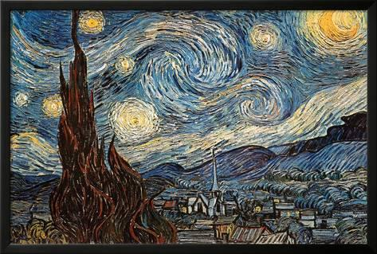

1.A obra abaixo é uma das obras mais famosas de Van Gogh. Qual seu nome?
2. Que tipos de obra Vincent Van Gogh costumava pintar?
3. Durante um tempo, Van Gogh se especializou em pintar um tipo de flor que considerava especial, que flor era essa?
4. Em um ato de fúria, qual parte do corpo Vincent Van Gogh cortou, após brigar com um amigo?
5. Qual o nome do irmão de Van Gogh?